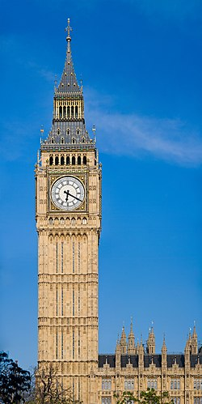
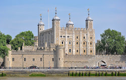
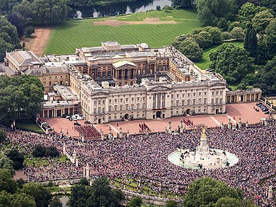
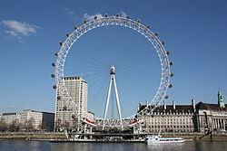
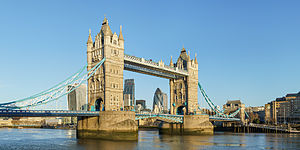

Big Ben is the nickname for the Great Bell of the Great Clock of Westminster, at the north end of the Palace of Westminster in London, England, and the name is frequently extended to refer also to the clock and the clock tower. The official name of the tower in which Big Ben is located was originally the Clock Tower, but it was renamed Elizabeth Tower in 2012 to mark the Diamond Jubilee of Elizabeth II. The tower was designed by Augustus Pugin in a neo-Gothic style. When completed in 1859, its clock was the largest and most accurate four-faced striking and chiming clock in the world. The tower stands 316 feet (96 m) tall, and the climb from ground level to the belfry is 334 steps. Its base is square, measuring 40 feet (12 m) on each side. Dials of the clock are 22.5 feet (6.9 m) in diameter. All four nations of the UK are represented on the tower on shields featuring a rose for England, thistle for Scotland, shamrock for Ireland, and leek for Wales. On 31 May 2009, celebrations were held to mark the tower's 150th anniversary. Big Ben is the largest of the tower's five bells and weighs 13.5 long tons (13.7 tonnes; 15.1 short tons). It was the largest bell in the United Kingdom for 23 years. The origin of the bell's nickname is open to question; it may be named after Sir Benjamin Hall, who oversaw its installation, or heavyweight boxing champion Benjamin Caunt. Four quarter bells chime at 15, 30 and 45 minutes past the hour and just before Big Ben tolls on the hour. The clock uses its original Victorian mechanism, but an electric motor can be used as a backup. The tower is a British cultural icon recognised all over the world. It is one of the most prominent symbols of the United Kingdom and parliamentary democracy, and it is often used in the establishing shot of films set in London. The clock tower has been part of a Grade I listed building since 1970 and a UNESCO World Heritage Site since 1987. On 21 August 2017, a four-year schedule of renovation works began on the tower. Modifications have included adding a lift, re-glazing and repainting the clock dials, and upgrading lighting and repairing roof tiles among other improvements. With a few exceptions, such as New Year's Eve and Remembrance Sunday, the bells remained silent.
Tower of London
The Tower of London, officially His Majesty's Royal Palace and Fortress of the Tower of London, is a historic castle on the north bank of the River Thames in central London. It lies within the London Borough of Tower Hamlets, which is separated from the eastern edge of the square mile of the City of London by the open space known as Tower Hill. It was founded toward the end of 1066 as part of the Norman Conquest. The White Tower, which gives the entire castle its name, was built by William the Conqueror in 1078 and was a resented symbol of oppression, inflicted upon London by the new Norman ruling class. The castle was also used as a prison from 1100 (Ranulf Flambard) until 1952 (Kray twins),[3] although that was not its primary purpose. A grand palace early in its history, it served as a royal residence. As a whole, the Tower is a complex of several buildings set within two concentric rings of defensive walls and a moat. There were several phases of expansion, mainly under kings Richard I, Henry III, and Edward I in the 12th and 13th centuries. The general layout established by the late 13th century remains despite later activity on the site. The Tower of London has played a prominent role in English history. It was besieged several times, and controlling it has been important to controlling the country. The Tower has served variously as an armoury, a treasury, a menagerie, the home of the Royal Mint, a public record office, and the home of the Crown Jewels of England. From the early 14th century until the reign of Charles II in the 17th century, a procession would be led from the Tower to Westminster Abbey on the coronation of a monarch. In the absence of the monarch, the Constable of the Tower is in charge of the castle. This was a powerful and trusted position in the medieval period. In the late 15th century, the Princes in the Tower were housed at the castle when they mysteriously disappeared, presumed murdered. Under the Tudors, the Tower became used less as a royal residence, and despite attempts to refortify and repair the castle, its defences lagged behind developments to deal with artillery. The zenith of the castle's use as a prison was the 16th and 17th centuries, when many figures who had fallen into disgrace, such as Elizabeth I before she became queen, Sir Walter Raleigh, and Elizabeth Throckmorton, were held within its walls. This use has led to the phrase "sent to the Tower". Despite its enduring reputation as a place of torture and death, popularised by 16th-century religious propagandists and 19th-century writers, only seven people were executed within the Tower before the World Wars of the 20th century. Executions were more commonly held on the notorious Tower Hill to the north of the castle, with 112 occurring there over a 400-year period. In the latter half of the 19th century, institutions such as the Royal Mint moved out of the castle to other locations, leaving many buildings empty. Anthony Salvin and John Taylor took the opportunity to restore the Tower to what was felt to be its medieval appearance, clearing out many of the vacant post-medieval structures. In the First and Second World Wars, the Tower was again used as a prison and witnessed the executions of 12 men for espionage. After the Second World War, damage caused during the Blitz was repaired, and the castle reopened to the public. Today, the Tower of London is one of the country's most popular tourist attractions. Under the ceremonial charge of the Constable of the Tower, and operated by the Resident Governor of the Tower of London and Keeper of the Jewel House, the property is cared for by the charity Historic Royal Palaces and is protected as a World Heritage Site.
Buckingham Palace
In the Middle Ages, the site of the future palace formed part of the Manor of Ebury (also called Eia). The marshy ground was watered by the river Tyburn, which still flows below the courtyard and south wing of the palace. Where the river was fordable (at Cow Ford), the village of Eye Cross grew. Ownership of the site changed hands many times; owners included Edward the Confessor and Edith of Wessex in late Saxon times, and, after the Norman Conquest, William the Conqueror. William gave the site to Geoffrey de Mandeville, who bequeathed it to the monks of Westminster Abbey. In 1531, Henry VIII acquired the Hospital of St James, which became St James's Palace, from Eton College, and in 1536 he took the Manor of Ebury from Westminster Abbey. These transfers brought the site of Buckingham Palace back into royal hands for the first time since William the Conqueror had given it away almost 500 years earlier. Various owners leased it from royal landlords, and the freehold was the subject of frenzied speculation during the 17th century. By then, the old village of Eye Cross had long since fallen into decay, and the area was mostly wasteland. Needing money, James VI and I sold off part of the Crown freehold but retained part of the site on which he established a four-acre (1.6 ha) mulberry garden for the production of silk. (This is at the north-west corner of today's palace.) Clement Walker in Anarchia Anglicana (1649) refers to "new-erected sodoms and spintries at the Mulberry Garden at S. James's"; this suggests it may have been a place of debauchery. Eventually, in the late 17th century, the freehold was inherited from the property tycoon Sir Hugh Audley by the great heiress Mary Davies.
London Eye
The London Eye was designed by the husband-and-wife team of Julia Barfield and David Marks of Marks Barfield Architects.[21][22] Mace was responsible for construction management, with Hollandia as the main steelwork contractor and Tilbury Douglas as the civil contractor. Consulting engineers Tony Gee & Partners designed the foundation works while Beckett Rankine designed the marine works.[23] Nathaniel Lichfield and Partners assisted The Tussauds Group in obtaining planning and listed building consent to alter the wall on the South Bank of the Thames. They also examined and reported on the implications of a Section 106 agreement attached to the original contract, and also prepared planning and listed building consent applications for the permanent retention of the attraction, which involved the co-ordination of an Environmental Statement and the production of a planning supporting statement detailing the reasons for its retention.[24] The spindle, hub, and tensioned cables that support the rim The rim of the Eye is supported by tensioned steel cables and resembles a huge spoked bicycle wheel. The lighting was re-done with LED lighting from Color Kinetics in December 2006 to allow digital control of the lights as opposed to the manual replacement of gels over fluorescent tubes. The wheel was constructed in sections which were floated up the Thames on barges and assembled lying flat on piled platforms in the river. Once the wheel was complete it was lifted into an upright position by a strand jack system made by Enerpac. It was first raised at 2 degrees per hour until it reached 65 degrees, then left in that position for a week while engineers prepared for the second phase of the lift. The project was European with major components coming from six countries: the steel was supplied from the UK and fabricated in The Netherlands by the Dutch company Hollandia, the cables came from Italy, the bearings came from Germany (FAG/Schaeffler Group), the spindle and hub were cast in the Czech Republic, the capsules were made by Poma in France (and the glass for these came from Italy), and the electrical components from the UK.
Tower Bridge
Tower Bridge is a Grade I listed combined bascule and suspension bridge in London, built between 1886 and 1894, designed by Horace Jones and engineered by John Wolfe Barry with the help of Henry Marc Brunel. It crosses the River Thames close to the Tower of London and is one of five London bridges owned and maintained by the Bridge House Estates, a charitable trust founded in 1282. The bridge was constructed to give better access to the East End of London, which had expanded its commercial potential in the 19th century. The bridge was opened by Edward, Prince of Wales and Alexandra, Princess of Wales in 1894. The bridge is 800 feet (240 m) in length and consists of two 213-foot (65 m) bridge towers connected at the upper level by two horizontal walkways, and a central pair of bascules that can open to allow shipping. Originally hydraulically powered, the operating mechanism was converted to an electro-hydraulic system in 1972. The bridge is part of the London Inner Ring Road and thus the boundary of the London congestion charge zone, and remains an important traffic route with 40,000 crossings every day. The bridge deck is freely accessible to both vehicles and pedestrians, whereas the bridge's twin towers, high-level walkways, and Victorian engine rooms form part of the Tower Bridge Exhibition. Tower Bridge has become a recognisable London landmark. It is sometimes confused with London Bridge, about 0.5 miles (800 m) upstream, which has led to a persistent urban legend about an American purchasing the wrong bridge.
Total:
London is a beautiful city for those who love sightseeing and history and for peoples who like beautiful places.
www.wikipedia.org